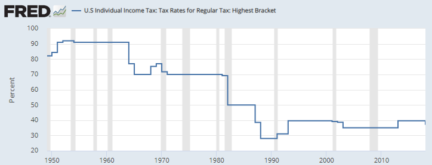

Tasa marginal máxima del impuesto al ingreso en Estados Unidos

La tasa máxima legal difiere de la tasa media efectiva y no mide la carga fiscal de todos los hogares. Los años son fiscales. Última observación FRED: 2018, actualización: 14-ene-2021. El descenso de una tasa no identifica por sí solo efectos sobre crecimiento.
1949–2018 aproximadamente, según imagen histórica; última observación FRED: 2018
PNG histórico exacto del curso; FOJf identifica IITTRHB. No se digitalizan valores ni se presenta como actualización de 2026.